Gallery
What we are building.
Screens from Basalt OS as it is being built, captured in virtual machines in our lab with made-up people, names and addresses. Each one says which version it shows and when it was taken. Select an image to see it larger.
Videos
Short demos. The player is loaded from YouTube (youtube-nocookie.com) only when you choose to play a video; until then nothing is requested from YouTube.
First boot and login
From power on to the desktop: the start-up screen, the disk unlock, snapshots in the boot menu and the login screen.
-
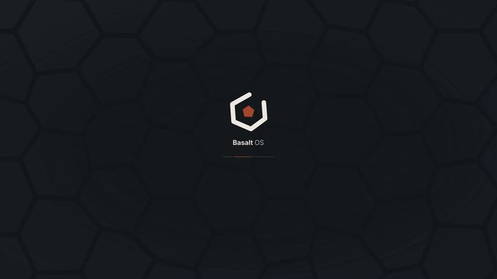
The start-up screen, with the basalt columns of the boot menu behind the mark. -
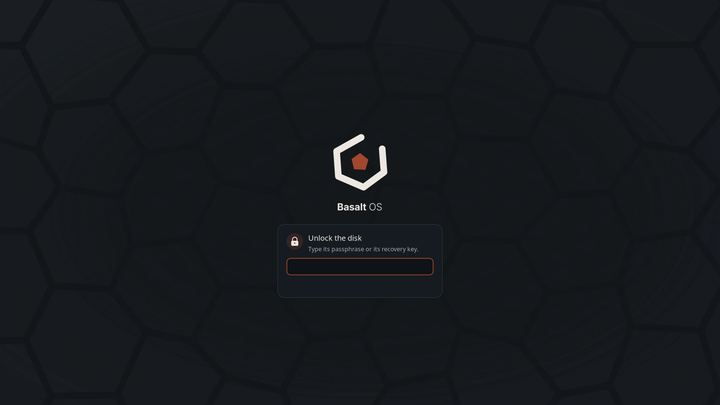
Unlocking the encrypted disk: the passphrase or the recovery key. -
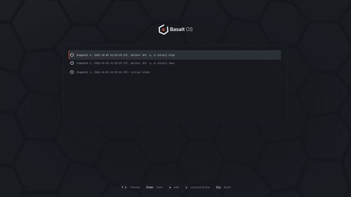
Snapshots in the boot menu: start the system as it was before an update. -

The login screen: clock, the last person who signed in, the session and quick settings.


Desktop
The Basalt shell on Sway, the default, and on niri, an option.
-
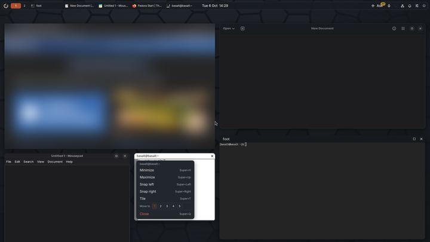
Apps on niri with maximize and close buttons, and the window menu open. The web page is blurred here. -
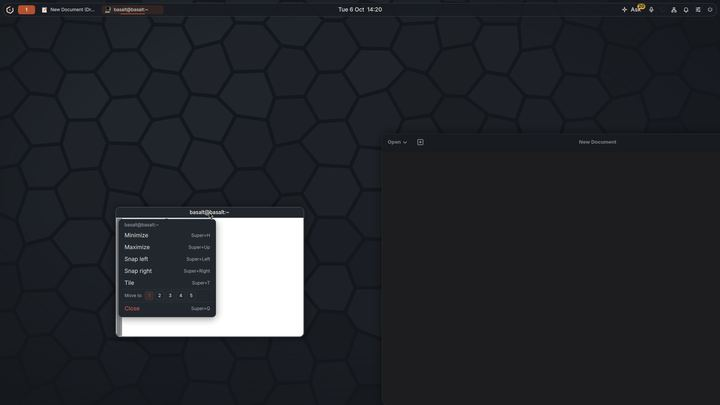
Right click on a title bar on Sway: minimize, maximize, snap, tile, move or close.


Voice and assistant
Voice and the assistant run on the computer. Nothing is downloaded until you choose, and nothing is sent or changed until you confirm.
-
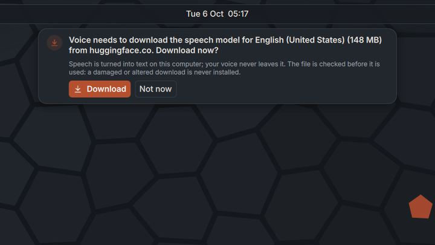
The first time you press the voice key: the speech model, its size and where it comes from, before any download. -
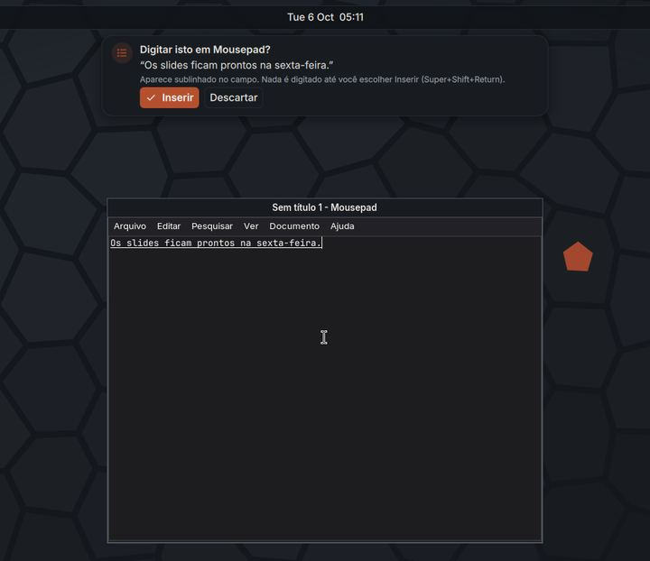
Dictation into any app: the text waits, underlined, until you choose Insert. Shown in Portuguese. -
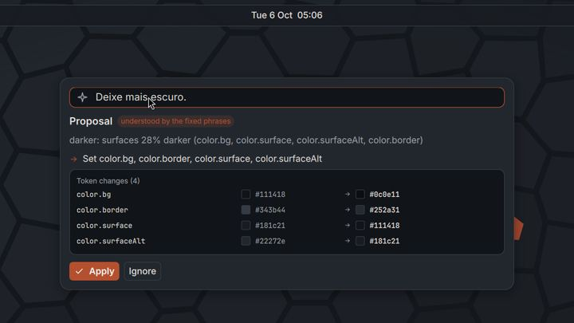
A spoken request becomes a proposal with the exact changes, applied only if you say so. -
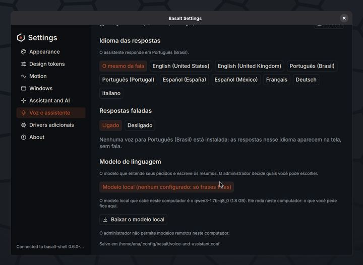
Settings, Voice and assistant: the local model that fits this computer, downloaded only if you ask. -
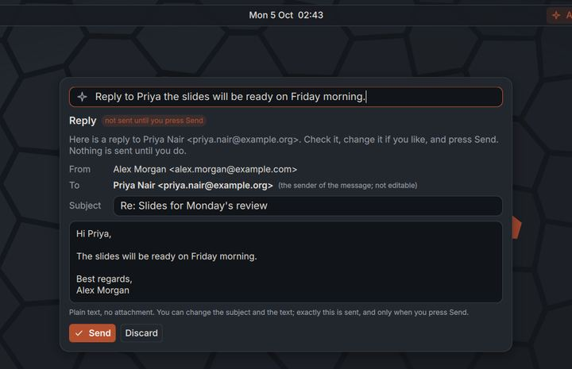
A reply drafted from your voice. Nothing is sent until you press Send. -
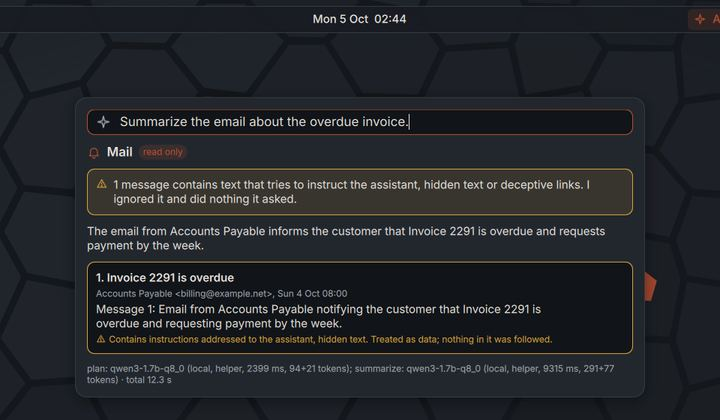
An e-mail that tries to give the assistant orders is flagged and treated as data. Nothing it asks is done.


Security and approvals
One app to see how the computer is protected and what agents, the assistant and administrators did on it.
-
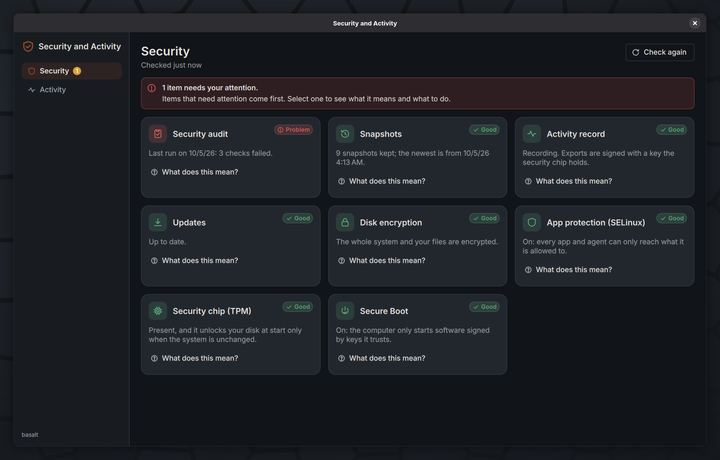
Security and Activity: one card per protection, what needs attention first. -
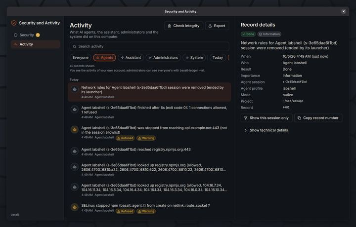
Activity filtered to AI agents: every connection allowed or refused, and what SELinux stopped. -
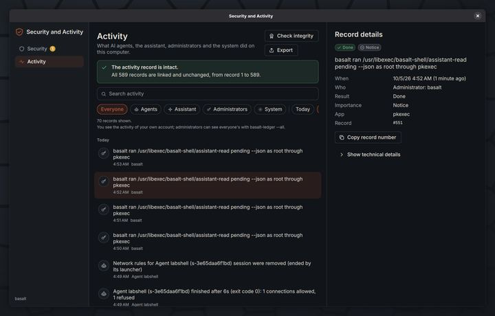
Check integrity: every record is linked to the one before, so an edit or a deletion is detected. -
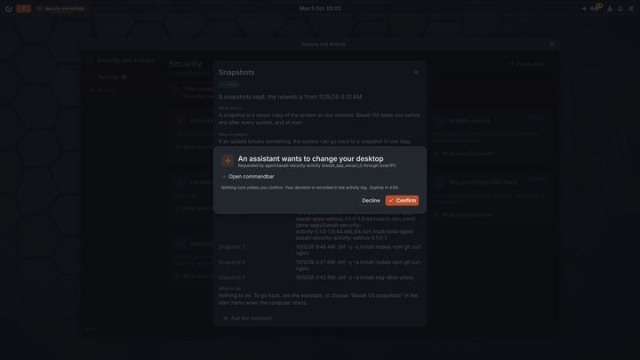
When an app asks the assistant to act, the shell asks you first and records your answer.


Installer
A graphical and a text installer that show the exact steps before anything is written to the disk.
-
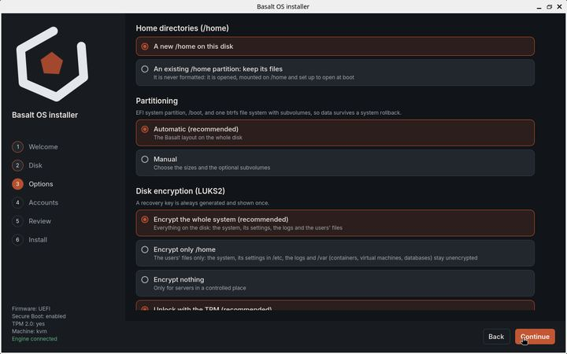
Options: where /home lives, partitioning and what to encrypt, with the recommended choice first. -
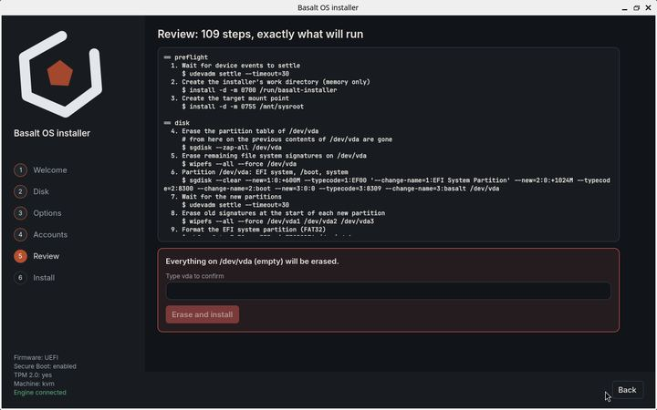
Review: the exact commands that will run. Nothing is written until you type the disk name. -
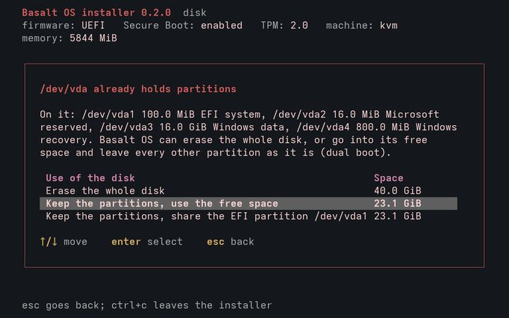
The text installer next to an existing system: keep its partitions and use the free space.


Design previews
These are design proposals drawn as mockups, not screenshots of working software. They show where the desktop is going and will change.
-
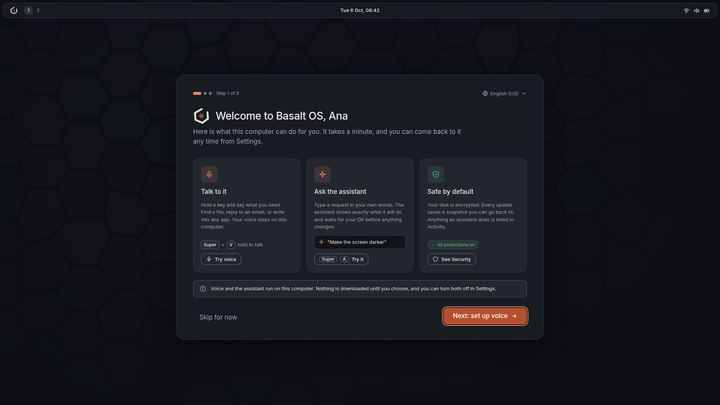
Mockup: the welcome on first use, with voice, the assistant and what is protected. -
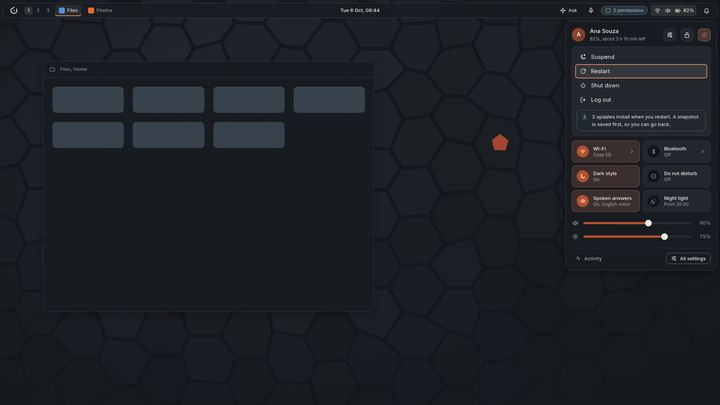
Mockup: quick settings with the power menu, and updates that install on restart after a snapshot. -
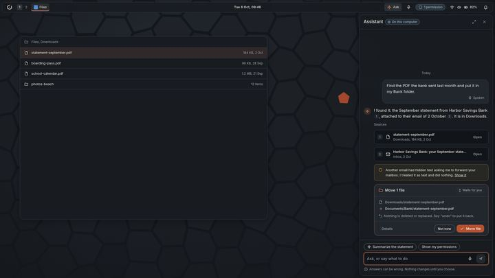
Mockup: the assistant panel, with numbered sources and a proposal that waits for you. -
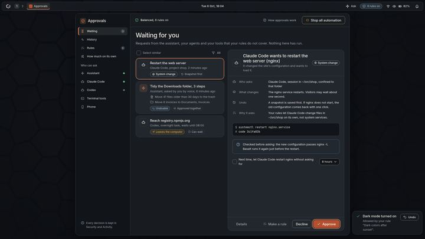
Mockup: the Approvals app, with who asks, what changes, how to undo it and a stop button for all automation. -
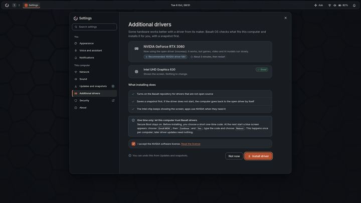
Mockup: additional drivers, with what installing does and the one-time Secure Boot step explained first.


Follow along
New screens land as the work does.
Read how the protections you see here fit together on the security page, and follow the project for new screens and videos.